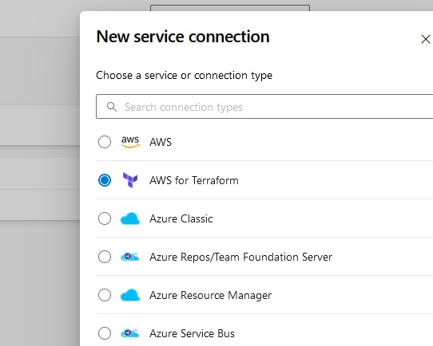
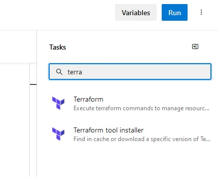
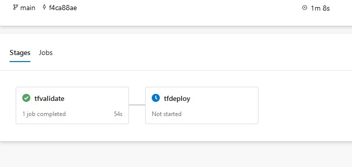

SCC
Brasil
os cloud gurus
Software Cloud Consulting
Your software development, cloud, consulting & shoring company
Azure Devops Pipeline for Terraform Deployments

By Wolfgang Unger
Introduction
Lets have a look how to deploy your Terraform Infrastructure with Azure Devops Pipelines.
In this example we deploy to AWS, but it will work also for Azure or GCP, this just depends on the Service Connection.
First we got of course a Terraform Project with IaC resources.
Let's assumed it is well structured like described in this blog :
Terraform project structure
We want our Pipeline basically to perform the following commands, that we execute on the CLI .
Init:
terraform init -backend-config="env/qa-backend.conf"
The plan, apply or delete commands you will execute with the tfvars file:
terraform plan/apply -var-file env/qa.tfvars
CI/CD User
We will need a IAM User for the permissions to deploy to AWS.
The user will be created only once in the Master Account and each Pipeline will use switch Role to deploy to the Stage Accounts.
So the user itself in the Master Account just needs the policy to switch Role (sts:assumeRole), but the Role it will assume in each Stage Account should have PowerUserAccess to be able to deploy resources.
Of cource you can limit permissions in a fine granulary policy, but let's keep it easy for now.
We will need to create Access Keys for the User, they will be needed in the Service Connection.
Service Connection
To get started we need to create a Service Connection in our Azure Devops Project to be able to deploy to our target Cloud, we will create a Service Connection to AWS account(s).
In Project Settings, switch to Service Connection and select 'New Service Connection'.

Select 'AWS for Terraform' and Next.
Enter AWS Key and Secret and Region and a name for the Service Connection (azure-devops-user)
Variable Groups
You have to define a Variable Group for each environment/accont, you want to deploy.
Go to Pipelines→Library→Variable Groups and define a new Group, for example MyProject-Dev
We need 4 Variables in the Group to be able to execute the terraform commands in the Pipeline:
- backend_config: should point to your terraform backend configuration file, for example env/myProject/dev-backend.conf
- env_vars: should point to your terraform variables file, for example env/myProject/dev.tfvars
- backendAWSBucketName: the name of your S3 Bucket for your terraform state
- backendAWSKey: the name of the state file, for example ‘terraform.tfstate’
You can define n of the groups, the variables should be named identically .
You will adress the variables inside the groups with the group-attribute in the pipeline.
To be able to read your variables groups in your Pipeline you have to link the variable group to your pipeline.
In the Pipeline ( within the next step), select the options (...) on the right side and select 'Triggers',
open variable groups and add a link to connect your group to the pipeline.
Pipeline
Now we can finally define our Pipeline in the pipeline yaml file.
Switch to Pipelines and Press ‘New Pipeline’
Select the correct Git Repo type, for example Azure Repos or Github etc
Select the correct Repo where your Terraform project is hosted.
On the next screen ‘Configure your Pipeline’ select Starter Pipeline.
Now we are in the YAML Editor and can define our Pipeline steps.
We will set the trigger to none, because we don't want the deployment happen on any push.
We want to deploy manually, we might need inform testers or do on a maintenance window on Prod.
For the vmImage we select ubuntu-latest, the the initial part looks like:
trigger: none
pool:
vmImage: ubuntu-latest
Variables
Next we will define some variables, we will need :
- region
- backendServiceAWS (the service connection we have created to deploy to aws)
- optional: my_terraform_templates_dir : if you have your terraform main file not in the root directory of your repo, we will need this variable to define 'workingDirectory' in our commands.
- group: the variable group we have defined earlier
Under this group, the 4 variables we have defined in our Variable Group will be recordnized automatically
If you copy your Dev Pipeline to create a QA Pipeline, all you need to do, is change the name of the variable group.
So the variables block will be like:
variables:
region: 'eu-central-1'
backendServiceAWS: 'my-service-connection'
my_terraform_templates_dir: 'infrastructure/'
group: my-project-dev-account
Now we can define our stages.
On the right side, you see tasks, type terraform and you will see 'Terraform' and 'Terraform tool installer', we will need both of them.

If you add a taks from the right menu, it will include a command skeleton, you can go this way or you just copy the syntax of the example code here.
Stages
I am defining 2 stages, validate and deploy, feel free you design your pipeline stages different.
Therefore the first part is:
stages:
- stage: tfvalidate
jobs:
- job: validate
continueOnError: false
steps:
Under steps we will now define our tasks (as mentioned you can add them also from the task menu by selecting them):
First we need to install terraform on the pipeline VM, be sure you select the same version as in your provider section.
- task: TerraformInstaller@1
displayName: tfinstall
inputs:
terraformVersion: '1.4.6'
Next we need the terraform init command.
- task: TerraformTaskV4@4
displayName: tfinit
inputs:
provider: 'aws'
command: 'init'
workingDirectory: $(my_terraform_templates_dir)
commandOptions: '-backend-config=$(backend_config) -reconfigure'
backendServiceAWS: '$(backendServiceAWS)'
backendAWSBucketName: '$(backendAWSBucketName)'
backendAWSKey: '$(backendAWSKey)'
Not mandatory, if you do a plan before apply, but a validate task is not a bad idea:
- task: TerraformTaskV4@4
displayName: tfvalidate
inputs:
provider: 'aws'
command: 'validate'
And finally we can do a terraform plan:
- task: TerraformTaskV4@4
displayName: tfplan
inputs:
provider: 'aws'
command: 'plan'
workingDirectory: $(my_terraform_templates_dir)
commandOptions: '-var-file=$(env_vars)'
environmentServiceNameAWS: '$(backendServiceAWS)'
The validate stage is complete, you can already run the pipeline and confirm everything works.
On the first run you might need to confirm permissions for the pipeline to use the service connection.
Now we add a second stage for the terraform apply command and the deployment of our resources.
This block is basically a copy paste of our first stage, but the first part is a little different.
- stage: tfdeploy
condition: succeeded('tfvalidate')
dependsOn: tfvalidate
jobs:
- job: deploy
continueOnError: false
steps:
We got 2 important pieces here.
First, we want this stage only to run when the validate stage has succeeded. Therefor we got the condition succeeded.
Also we want to run this stage sequentially, not in parallel, therefor we define dependsOn, to be sure to wait for
the first stage to complete.
You can basically copy the first stage or better its 3 tasks to this tfdeploy stage.
There is only one difference :
The last task is not terrafrom plan, but apply and should therefor be labeled as apply and the command should be apply not plan.
Now you can run your Pipeline and it should deploy your Terraform resources to your AWS account.

Have fun with the Pipeline and have also a look in our other blogs!
References
Autor

Wolfgang Unger
AWS Architect & Developer
6 x AWS Certified
1 x Azure Certified
A Cloud Guru Instructor
Certified Oracle JEE Architect
Certified Scrum Master
Certified Java Programmer
Passionate surfer & guitar player